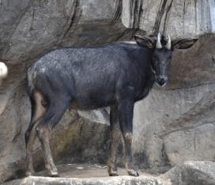

Murlen National Park
Location : Champhai district, Mizoram. About 245 km east of Aizawl, close to the Chin Hills.
Established in : 1991
Area : 200 km2
Flora : The vegetation is admixture of Quercus, Schima wallichii, Betula,
Michelia champaca, Pinus kesiya, Prunus, Myrica, Rhododendron, Chimonobambusa
callosa, canes and a variety of orchids and lichens.
Fauna : Tiger, leopard, sambar, barking deer, Malayan giant squirrel, Himalayan black bear, serow,
hoolock gibbon, rhesus macaque, Hume's pheasant, kalij pheasant, grey partridge, hill myna, and dark-rumped swift.
Features : Only about 1% of the sun's ray can penetrate the forest on a sunny day. So the thickness
of the forest in the park is generally compared to the forest found in the Amazon region in South America. Some of
the trees found in the park are as old as 350 years. There is an area in the park where not even a single sun's ray
can penetrate. And for this reason the area has been known as ‘losing area of seven fellow-men’ or land of no return.

Murlen National Park

Grey partridge

Serow